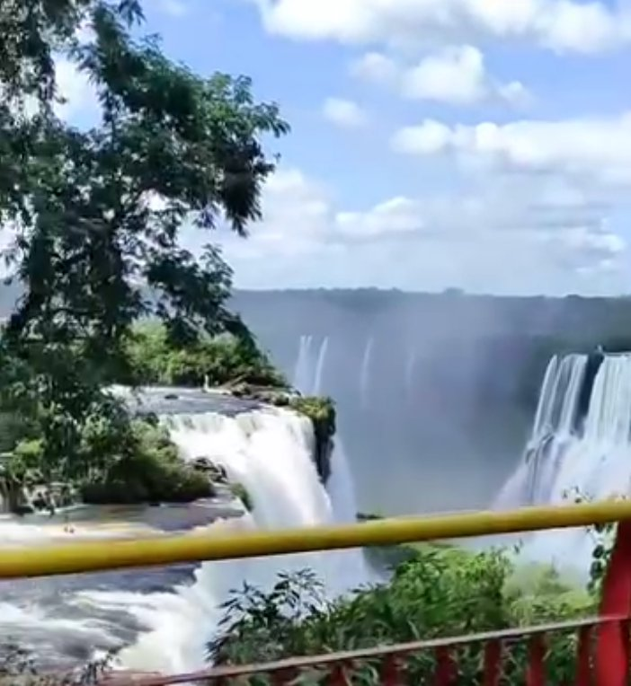

Viagens em grupo, excursões e fretamentos corporativos com o máximo de conforto, pontualidade e segurança em veículos revisados e certificados.
Veículos devidamente registrados e autorizados na ANTT (00.4166) e no CADASTUR.
Poltronas reclináveis soft em couro, ar-condicionado digital, tomadas USB e amplo espaço.
Condutores profissionais com curso de transporte de passageiros e direção defensiva.
Roteiros personalizados e atendimento atencioso do primeiro contato até o retorno seguro.
Viagens consagradas e passeios exclusivos de bate e volta com o conforto e pontualidade da Monitur.
 Bate & Volta Aventura
Bate & Volta Aventura
Circuito com 8 cachoeiras impressionantes! Trilhas no meio das águas, trilhas por dentro das quedas, rapel e muita adrenalina em meio à natureza preservada.
 Bate & Volta Aventura
Bate & Volta Aventura
O 6º maior cânion do mundo! Conheça os mirantes panorâmicos, a Cachoeira Ponte de Pedra, trilhas autoguiadas e os incríveis Panelões do Sumidouro.
 Bate & Volta Aventura
Bate & Volta Aventura
Uma imensa fenda rochosa com cachoeira interna para banho! Inclui Trilha do Favo, Trilha Beira-Rio, Trilha das Araucárias e Vila Velha.
 Passeio Ferroviário
Passeio Ferroviário
Eleito um dos passeios ferroviários mais espetaculares do planeta. Viagem sobre viadutos e pontes históricas na Mata Atlântica com almoço típico (barreado) em Morretes.
 Charme & Frio
Charme & Frio
O charme europeu das Serras Gaúchas: Natal Luz, vinícolas em Bento Gonçalves, fondues deliciosos e parques temáticos em uma viagem executiva de primeira classe.
 Maravilha Mundial
Maravilha Mundial
As imponentes Cataratas do Iguaçu, Parque das Aves, Marco das Três Fronteiras e compras livres no Paraguai e Argentina com total segurança no transporte.
 Diversão em Família
Diversão em Família
O maior parque temático da América Latina! Viagem perfeita para crianças, famílias e escolas, com desembarque direto na portaria e todo conforto a bordo.
 Praia Pé na Areia
Praia Pé na Areia
Balneário Camboriú, Bombinhas, Itapema, Florianópolis ou Ilha do Mel. Vá curtir o sol e o mar sem o estresse de horas cansativas no trânsito.
 Natureza Pura
Natureza Pura
Quedas d'água monumentais, arco-íris naturais e piscinas de pedras cristalinas. O melhor do turismo de natureza do interior do Paraná com embarque na sua porta.
Veículos modernos, higienizados e rigorosamente inspecionados para atender qualquer tamanho de grupo.


O micro-ônibus perfeito para excursões de médio e grande porte, congressos, viagens religiosas e translados corporativos. Equipado com poltronas ergonômicas reclináveis, suspensão de alta maciez e acessibilidade.


Agilidade, luxo e praticidade para grupos menores, famílias, traslados em aeroportos, feiras de negócios e casamentos. Acabamento executivo com bancos individuais de couro, iluminação relaxante e porta-malas gigante.
Viagem turística executiva com a Van Monitur.
Pintura verde perolizada e identificação ANTT 00.4166.

Um dos destinos mais procurados pelos nossos clientes.
Bancos anatômicos em couro e iluminação LED.
Mais espaço para esticar as pernas e relaxar na estrada.
Identificação oficial de passageiros e acessibilidade PCD.
Mais de 500 viagens realizadas com nota máxima em pontualidade, atendimento e segurança.
"Fretamos a van Sprinter para nossa viagem em família para o Beto Carrero. Veículo impecavelmente limpo, ar-condicionado excelente e o motorista foi extremamente pontual e educado. Recomendo de olhos fechados!"
"A Monitur levou nossa equipe para um congresso em Curitiba no micro-ônibus Volare. Conforto de sobra, tomadas para carregar o celular durante todo o trajeto e total tranquilidade na estrada. Parceiros para sempre!"
"Fizemos a rota para Foz do Iguaçu com grupo da igreja. O atendimento desde a cotação no WhatsApp até a entrega dos passageiros foi de um profissionalismo ímpar. Veículo novinho e seguro."
Respondemos as dúvidas mais comuns sobre fretamento, seguro e formas de reserva.